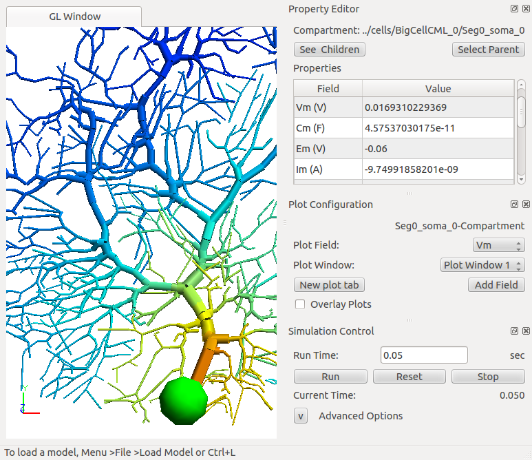
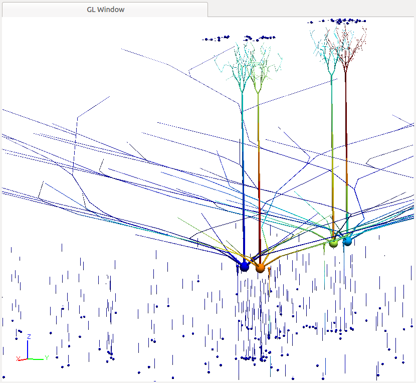
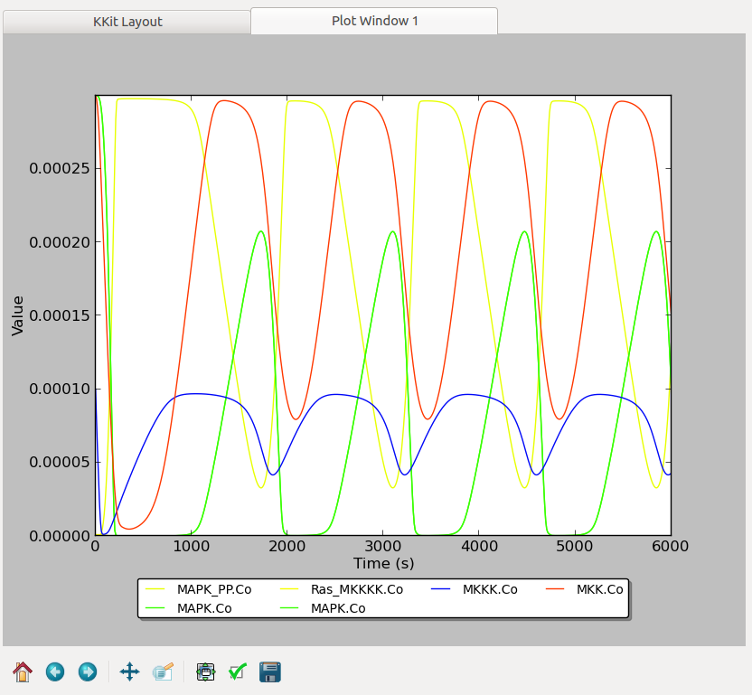
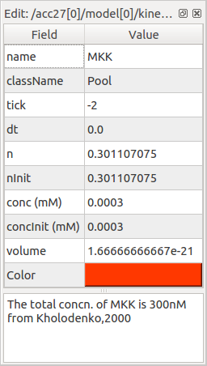
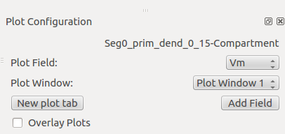
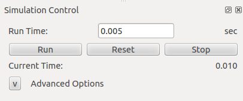

MOOSEGUI: Graphical interface for MOOSE.
Table of Contents
1 Introduction
The Moose GUI lets you work on chemical and compartmental neuronal models using a common interface framework. This document describes this common framework. In MOOSE 2.0.0, the interface lets you read, run, edit, and write chemical kinetic models, and to read, edit and run neuronal models.
1.1 Platform
1.2 Layout of interface

1.3 The menu bar
In Ubuntu 12.04, the menu bar appears only when the mouse is in the top menu strip of the screen. In other distributions it should appear over the top of the interface.
The menu bar contains the following entries: File, Edit, View, Solver, Help.
- File
-
- Load Model: This leads to a file finder dialog. The default location should bring you to the Demos directory of MOOSE. Here you can go into the Genesisfiles subdirectory, which contains legacy Kinetikit (.g) format models. The neuroml subdirectory leads to a number of example neuronal and network models, each in their own subdirectory. The other demos are mostly standalone demos.
- Save Model: This currently works only for chemical kinetic models, and only works for the Kinetikit format.
- Merge Models: This allows one to load in a new chemical kinetic model on top of an already loaded model.
- Save plots: Dumps plot contents to disk in xplot (ascii) format.
- Shell model: Not yet operational
- Reset settings: Restores interface settings to default.
- Quit: Quits the interface.
- Edit
-
- Settings: Provides for changing interface settings such as file locations.
- View
-
This allows one to control display of various parts of the interface.
- Moose shell: Currently inactive.
- Property editor: Toggles visibility of the panels for viewing and editing object parameters. This is to the upper right of the interface in the interface layout example figure above.
- Simulation control: Toggles visibility of the panels for controlling running of the simulation, at the bottom right of the interface layout.
- Plot config: Toggles visibility of panels for making plots. This is in the middle right of the interface layout.
- Sub Windows: This sets up the model view and the plot view panels into separate sub-windows of the screen. Useful when you want to watch plots at the same time as the cell display, or to select and edit different parts of the model while watching the simulation progress.
- Tabs: This sets up the model view and plot view panels into tabs on the screen, as in the example interface figure above. This is useful to dedicate a larger portion of screen area to each display.
- Solver
-
The Solver options currently only select between methods for kinetic models. Details are in the chemical kinetics documentation. Options are:
- Runge Kutta This is the default method for integration of ODE systems. It uses the Gnu Scientific Library 5-th order explicit variable- timestep Runge-Kutta-Fehlberb method.
- Gillespie This is an implementation of Gillespies Stochastic Systems Algorithm, which computes reaction progress using a stochastic method.
- Help
-
- About: Version and general information about MOOSE.
- General documentation: This file. How to use the common interface framework.
- Kkit": Documentation on the use of Kinetikit version 12. - *Nkit": Docomentation on the use of Neurokit version 2.
- Report a bug: Takes you to the SourceForge bug tracker for Moose.
1.4 The Model window
The Model window displays a view of the model structure. These views vary depending on the model type. For a neuronal or neuronal network model, the window displays a 3-D view of the cell(s) in the model, and furthermore it sets the color of each compartment based on some variable value, typically Vm, the membrane potential of the compartment. Note the 3-D axis indicators in the bottom left.

In this window, the individual compartments can be clicked to select, and when selected, the compartment parameters and variables are displayed in the property editor described below.
For a chemical kinetics network, the window displays a schematic of the chemical reaction system. There are distinct icons for molecules, reactions and enzymes, and these are connected by arrows to set up the reaction scheme. Again, any icon can be clicked to select and its parameters and variables come up in the property editor.

- zooming, rotating and panning
- Selecting and viewing objects in the window
1.5 The plot window
The plot window displays time-series plots of the simulation. Plots are color-coded to distinguish them. In the case of the kkit interface the plots take the same color as the molecule pool that they represent.

- Zoom/Pan
- File ops
1.6 The side panel
The side panel displays three controls: the Property editor, the Plot configuration and the Run control.
1.6.1 Property editor
The property editor displays parameters and variables of the selected model component (object).

The object many be a compartments of a neuronal model, or pools, reactions, or enzymes in a signaling model.
- The top of the property editor: displays the class and
path of the selected object.
- See children: opens a subsidiary table to navigate to child
objects in the filesystem-like object tree.
- Select Parent: Navigates back up to the parent object in the
- Properties: This table displays
field names in the first column, followed by field values in the second. If the field is editable one can click on the value in the second column and change it.
1.6.2 Plot configuration
The Plot configuration panel lets one set up new plots based on selected objects and their fields.

- The top line: has the name of the object whose field is to be
plotted.
- Plot Field: Specifies field to be plotted.
- Plot Window: Specifies which of the existing plot windows to use for the new plot.
- New Plot Tab: This button creates a new plot window as a tab.
- Add Field: Creates the plot as specified by the other options.
- Overlay Plots: When not checked, plots are cleared every time the \Reset\ button is hit. When checked, this retains the plots from the previous run.
1.6.3 Simulation control
The \Simulation control\ panel controls how the model is run.

- Run Time: Determines duration for which simulation is to run. If simulation has already run, this runs for the specified additional period.
- Reset: Restores simulation to its initial state; reinitializes all variables to t=0.
- Stop: This button halts an ongoing simulation.
- Current time: This reports the current simulation time.
- Advanced options: This is available only after Reset. This
sets:
- Plotdt: Timestep to use for updating plots.
- Simdt: Timestep to use for internal simulation clocks. Edit only if you know what you are doing. For kinetic models, most of the numerical methods use variable timestep calculations, so this should be set to the same value as the Plotdt in most cases.
- Update Plotdt: How frequently should the screen refresh.